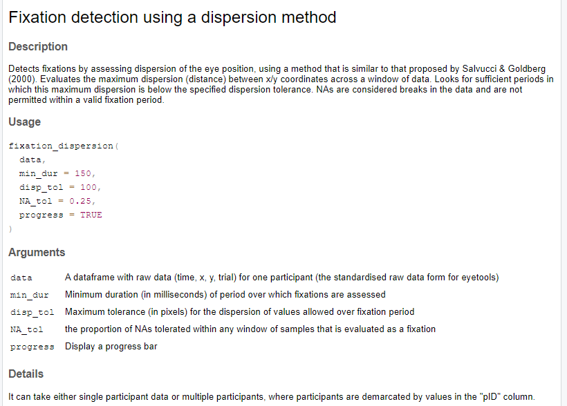
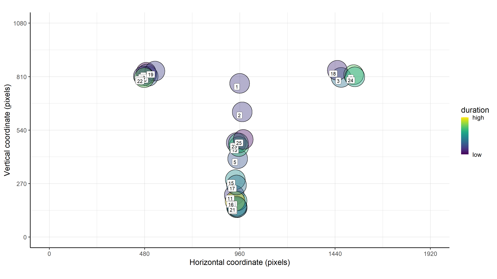
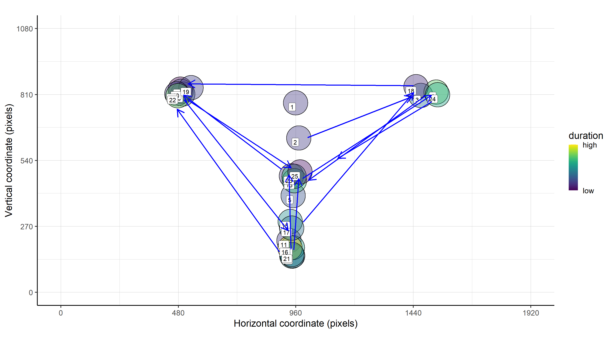
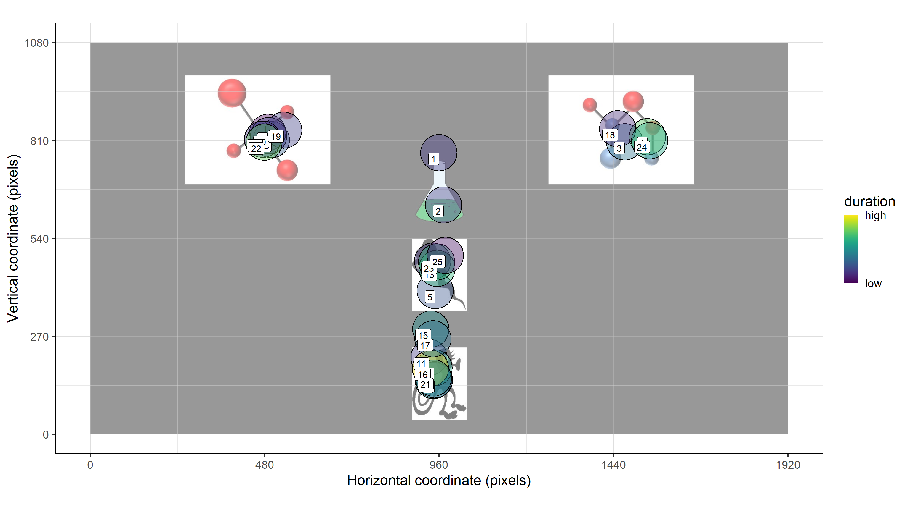
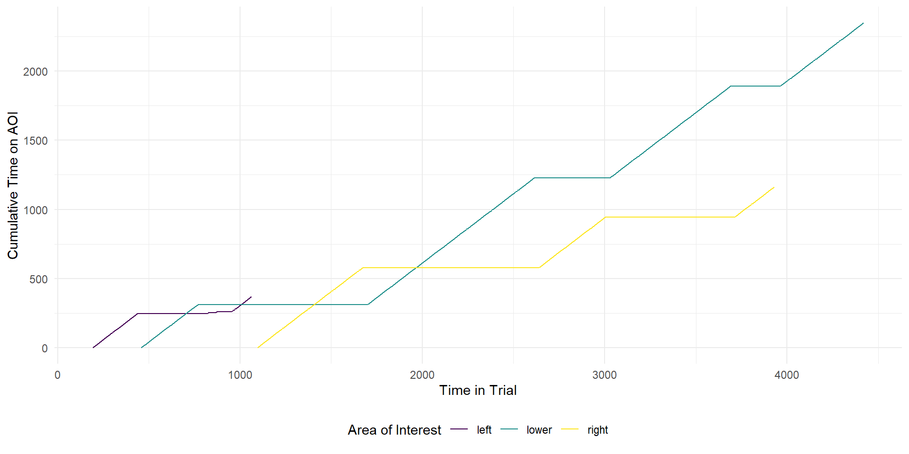

EPS - Lancaster - 4th April 2025
UK Reproducibility Network: “The reproducibility of both research methods and research results is critical to research in certain contexts, particularly in the experimental sciences with a quantitative focus.”
:::: columns ::: {.column width=“45%”} ::: ::: {.column width=“5%”} ::: ::: {.column width=“45%”}  ::: :::: ## R packages for eye data analysis {.smaller}
| Package | Hardware-agnostic | Data Import | Data processing | Identifies events | Plotting | Inferential Analysis |
|---|---|---|---|---|---|---|
| eyetools | * | |||||
| eyeTrackr | ||||||
| eyelinker | ||||||
| eyelinkReader | ||||||
| eyeRead | ** | |||||
| emov | ||||||
| eyetrackingR |
* for Tobii data only, ** for text reading experiments only
There is built in data from a simple experimental task, which shows you the requirements of the package:
# A tibble: 8 × 7
pID time left_x left_y right_x right_y trial
<chr> <dbl> <dbl> <dbl> <dbl> <dbl> <dbl>
1 118 0 909. 826. 1003. 808. 1
2 118 3 912. 829. 1001. 812. 1
3 118 7 912. 826. 1010. 813. 1
4 118 10 908. 824. 1006. 807. 1
5 118 13 912. 824. 1005. 805. 1
6 118 17 912. 826. 1000. 802. 1
7 118 20 910. 826. 997. 806. 1
8 118 23 912. 825. 1005. 806. 1Binocular data needs to be combined to produce monocular data:
pID time trial x y
1 118 0 1 955.8583 816.5646
2 118 3 1 956.5178 820.6221
3 118 7 1 960.7383 819.7616
4 118 10 1 956.9727 815.3331
5 118 13 1 958.6214 814.0815
6 118 17 1 956.0035 814.1564
7 118 20 1 953.2422 815.5876
8 118 23 1 958.4955 815.4608Eyetools features two fixation algorithms, one based on dispersion of data, the other based on velocity. Algorithms are based on methods in Salvucci and Goldberg (2000).
pID trial fix_n start end duration x y prop_NA min_dur disp_tol
1 118 1 1 0 180 180 961 812 0 150 100
2 118 1 2 190 433 243 959 585 0 150 100
3 118 1 3 437 750 313 960 477 0 150 100
4 118 1 4 783 1013 230 561 838 0 150 100
5 118 1 5 1016 1183 167 519 829 0 150 100
6 118 1 6 1210 1380 170 915 555 0 150 100
7 118 1 7 1383 1720 337 951 475 0 150 100
8 118 1 8 1736 2190 454 966 170 0 150 100
9 118 1 9 2236 2693 457 1537 826 0 150 100
10 118 1 10 2743 2926 183 968 355 0 150 100Eyetools can also extract saccades. Again, based on methods in Salvucci and Goldberg (2000).
pID trial sac_n start end duration origin_x origin_y terminal_x terminal_y mean_velocity peak_velocity
1 118 1 1 747 790 43 924.8913 502.8802 572.8710 808.0427 271.9532 395.7753
2 118 1 2 1183 1216 33 550.2522 797.0665 904.1434 572.8536 316.5920 453.7707
3 118 1 3 2193 2243 50 1049.3491 235.9011 1507.8226 815.9587 386.7776 625.4370
4 118 1 4 2690 2750 60 1517.8485 787.2293 972.7982 362.6627 302.3138 469.6868
5 118 1 5 3676 3733 57 947.6657 123.4475 1472.9220 773.0141 373.9121 676.8416
6 118 1 6 4223 4279 56 1517.9491 759.8224 973.0053 344.4058 314.7485 528.4388
7 118 1 7 5343 5383 40 928.6512 492.2177 551.4663 811.7441 305.4745 450.6908
8 118 1 8 6792 6826 34 524.8298 829.4756 916.6670 655.8209 318.2262 433.7030
9 118 1 9 7106 7129 23 1008.0858 598.3720 1031.5074 628.3630 460.4057 812.9176
10 118 1 10 7602 7639 37 890.4656 644.2127 524.1420 812.6614 276.6097 385.5759Plotting all the data from one participant:
Selecting data from participants and trials
Adding saccades to the plot:
Adding a background image
Plotting data over the course of a trial: plot_seq()
Plotting data over the course of a trial: plot_AOI_growth()
 pID trial AOI time
1 118 1 left 2809
2 118 1 right 811
3 118 1 lower 3227
4 118 2 left 656
5 118 2 right 723
6 118 2 lower 2621
7 118 3 left 443
8 118 3 right 360
9 118 3 lower 2218
10 118 4 left 1417
11 118 4 right 2323
12 118 4 lower 1439
13 118 5 left 164
14 118 5 right 537
15 118 5 lower 1708
16 118 6 left 426
17 118 6 right 563
18 118 6 lower 2022 pID trial AOI start end duration entry_n
1 118 1 lower 353 613 260 1
2 118 1 left 817 1153 336 2
3 118 1 lower 1750 2000 250 3
4 118 1 right 2363 2603 240 4
5 118 1 lower 3206 3489 283 5
6 118 1 right 3896 4093 197 6
7 118 1 lower 4393 5146 753 7
8 118 1 left 5556 6642 1086 8
9 118 1 left 7732 9129 1397 9
10 118 1 lower 9452 10322 870 10
11 118 1 lower 11015 11892 877 11open source R package for reproducible eye data analysis
simple to use, with just a basic understanding of R
simplifies essential parts of the eye data workflow
creates standard objects, such as ggplot figures and dataframes/tibbles
BRM manuscript forthcoming
install with: install.packages("eyetools")
suggest features at: github.com/tombeesley/eyetools
Thank you!
Tom Beesley - Lancaster University - t.beesley@lancaster.ac.uk
github.com/tombeesley/eyetools | install.packages(‘eyetools’)